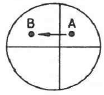

와전류비파괴검사기사 (2018-04-28 기출문제)
1과목: 비파괴검사 개론
1. 핵연료봉과 같은 높은 방사성 물질의 검사에 적합한 비파괴검사 방법은?
- 입자가속기를 이용한 고에너지 엑스선투과검사
- Co-60을 이용한 감마선투과검사
- 직접법을 이용한 중성자투과검사
- 간접법을 이용한 중성자투과검사
(정답률: 59%)

2. 초음파탐상검사의 특징을 설명한 것 중 틀린 것은?
- 검사결과를 신속히 알 수 있다.
- 표준시험편 또는 대비시험편 등이 필요하다.
- 균열과 같은 미세한 결함에 대해서도 감도가 높다.
- 조대한 결정입자를 가진 시험체의 검사에 적합하다.
(정답률: 74%)
3. 다음 중 액체와 시험체 표면과의 관계에서 적심성이 가장 좋은 조건은?
- 접촉각이 90°일 때
- 접촉각이 90°를 초과하는 조건일 때
- 접촉각이 135°를 초과하는 조건일 때
- 접촉각이 90°미만으로 작아지는 조건일 때
(정답률: 53%)
4. 다른 비파괴검사법과 비교하여 방사선투과검사의 주요 특성이 아닌 것은?
- 검사결과으 신속성
- 내부결함의 검출
- 검사결과의 영구기록
- 원자번호와 밀도 변화에 대한 검출
(정답률: 60%)
5. 58°F를 절대온도(K)로 변환하면 얼마가 되는가?
- 460K
- 331K
- 288K
- 0K
(정답률: 57%)
6. 굽힘시험에 관한 설명 중 틀린 것은?
- 주철의 단면강도는 보통 파단계수로 크기를 정한다.
- 보통 굽힘시험에서 알 수 있는 비례한계는 명확하지 않다.
- 굽힘균열시험으로 재료의 전성, 연성, 균열의 유무를 알 수 있다.
- 굽힘파단계수는 인장강도에 비례하므로 단면형상과는 관계가 없다.
(정답률: 57%)
7. 강에 함유된 탄소함량에 대한 설명으로 옳은 것은?
- 고탄소강일수록 성형성이 좋다.
- 0.12%C이하의 전탄소강을 일명 정강이라 한다.
- 고속도공구강은 탄소함량이 0.3∼0.5% 범위이다.
- 중탄소강은 Q, T(담금질, 뜨임)용으로 많이 사용된다.
(정답률: 45%)
8. 주철의 성장을 방지하는 방법으로 옳은 것은?
- 흑연을 크게 하여 더 이상 성장하지 않게 한다.
- 탄소 및 규소의 양을 증가시킨다.
- Cr, Mn, Mo, V 등을 첨가한다.
- 편상흑연화 한다.
(정답률: 64%)
9. 황동 가공재에서 자연균열이 발생하는 주요 원인은?
- 아연 독금 때문에
- 황의 유동 때문에
- 저온 풀림에 의해서
- 응력 부식에 의해서
(정답률: 60%)
10. 피로강도를 증가시키는 방법으로 옳은 것은?
- 표면 거칠기를 증가시킨다.
- 표면층의 강도를 감소시킨다.
- 가능한 한 노치가 많게 한다.
- 압연 및 표면에 쇼트 피이닝 처리를 한다.
(정답률: 52%)
11. 용융금속으로부터 직접 금속분말을 제조하는 방법이 아닌 것은?
- 익스투류전(Extrusion)
- 그레이닝(Graining)
- 분사법(Atomixation)
- 쇼팅(Shotting)
(정답률: 50%)
12. 다음 중 이온화 경향이 가장 큰 금속은?
- Al
- Ca
- Fe
- Pb
(정답률: 61%)
13. 주물용 알루미늄 합금이 아닌 것은?
- 실루민(Silumin)
- 인코넬(Inconel)
- 라우탈(Lautal)
- 로우엑스(Lo-Ex)
(정답률: 53%)
14. Al-Cu계 합금의 주된 자료 강화기구로 옳은 것은?
- 분산상에 의한 분산강화형
- 급냉에 의한 담금질경화형
- 합금원소에 의한 고용강화형
- 과포학 고용체의 시효에 의한 석출경화형
(정답률: 52%)
15. 구리(Cu)의 특성을 설명한 것 중 틀린 것은?
- 전기, 열의 양도체이다.
- 전연성이 좋으므로 가공이 용이하다.
- 체심입방격자이며 비중이 약 10.8이다
- Zn, Sn, Ni, Au, Ag 등과 용이하게 합금을 만든다.
(정답률: 60%)
16. 일반적인 용접의 장점으로 틀린 것은?
- 기밀, 수밀, 유밀성이 우수하며, 이음효율이 높다.
- 품질검사가 쉬우며, 변형과 수축 조절이 용이하다.
- 보수와 수리가 용이하며, 복잡한 구조물 제작이 쉽다.
- 제품의 성능과 수명이 향상되며, 이종재료도 접합할 수 있다.
(정답률: 64%)
17. 다음 용접부의 결합 중 내부 결함에 속하지 않는 것은?
- 은점
- 기공
- 오버랩
- 선상 조직
(정답률: 67%)
18. 용접작업에서 피닝(peening)의 주된 목적은?
- 부식을 감소시킨다.
- 경도를 감소시킨다.
- 강도를 감소시킨다.
- 잔류응력을 감소시킨다.
(정답률: 65%)
19. 다음 중 압접에 해당하는 용접방식은?
- 초음파 용접
- 스터드 용접
- 전자빔 용접
- 피복 아크 용접
(정답률: 30%)
20. 정격 사용률 50%, 정격 2차 전류 300A인 아크 용접기를 실제로 200A로 용접할 때 허용사용률은 약 몇 %인가?
- 50.5
- 56
- 112.5
- 150
(정답률: 46%)
2과목: 와전류탐상검사 원리
21. 다음 중 와전류가 유도될 수 없는 시험체는?
- 알루미늄(Al)
- 라텔스 페인트
- 철(Fe)
- 구리(Cu)
(정답률: 77%)
22. 비교표준(reference standard)을 하기 위한 시편을 선별할 때의 중요 조건이 아닌 것은?
- 표준시편은 검사할 시편과 동일한 크기와 동일한 모양이어야 한다.
- 표준시편은 검사할 시편과 동일한 열처리가 된 것이어야 한다.
- 표준시편은 검사할 시편과 동일한 표면조건이어야 한다.
- 시편이 알류미늄일 때는 표면은 양극화(anodized) 되어져야 한다.
(정답률: 58%)
23. 와류탐상코일의 임피던스가 증가하면 나타나는 현상은?
- 검사코일에 흐르는 전류를 증가시킨다.
- 검사코일에 흐르는 전류를 감소시킨다.
- 검사코일에 흐르는 전류의 주파수를 증가시킨다.
- 검사코일에 적용하는 저항을 감소시킨다.
(정답률: 60%)
24. 강자성체의 와전류탐상시험 결과 자기포화 부족으로 전면적으로 큰 잡음이 있었을 때 결함 확인 방법으로 올바른 것은?
- 주파수를 증가시켜 재시험한다.
- 교류 전압을 증가시켜 재시험한다.
- 자화 전류를 증가시켜 재시험한다.
- 자속 밀도를 감소시켜 재시험한다.
(정답률: 56%)
25. 와전류탐상시험에서 시험체에 유도된 와전류에 의해서 발생된 자장은 코일에 의해 발생된 자장에 어떤 영향을 주는가?
- 코일에 의해 발생된 자장을 방해한다.
- 코일에 의해 발생된 자장을 보강하여 준다.
- 코일에 의해 발생된 자장을 보강하기도 하고, 방해하기도 한다.
- 코일에 의해 발생된 자장에 영향을 주지 않는다.
(정답률: 50%)
26. Fill factor 변화에 의해 주어진 전도도 변화에 대하여 pickup 코일의 임피던스 변화는?
- 크기만 증가한다.
- 크기와 위상은 모두 변화없다.
- 위상만 감소한다.
- 크기와 위상이 모두 변화한다.
(정답률: 72%)
27. 와류탐상시험의 위상분석 방법 중 하나인 vector point 법에서 CRT 스크린상의 점이 그림과 같이 A에서 B로 그 위치가 변경되었다면 이는 무엇을 나타내는가?

- 시편의 Dimension의 변화
- 시편의 투자율의 변화
- 시편의 전기전도도의 변화
- 시편의 표피효과의 변화
(정답률: 70%)
28. 어떤 재료의 비저항이 13μΩcm라면 이 재료의 전도도는 몇 % IACS 인가?
- 85.5%
- 57.8%
- 26.5%
- 13.3%
(정답률: 72%)
29. 원형 봉강(棒鋼)을 관통 코일로 검사 시 전류밀도가 가장 높은 것은?
- 봉의 중심선 부분
- 봉 표면
- 봉 전체에 걸쳐 균일
- 봉의 양쪽 끝 부분
(정답률: 62%)
30. 와전류탐상장치의 교류 증폭기의 성능 측정을 하여야 할 사항으로 옳은 것은?
- 이득, 잡음, 직선성
- 이득, 주파수, 직선성
- 주파수, 직선성, 리젝션
- 감쇄 경도(dB/octave), 충진율, 위상
(정답률: 53%)
31. 와전류탐상시험에서 신호의 위상이 변화하는 경우는?
- 코일의 리액턴스와 저항의 비가 변화할 때
- 코일에 흐르는 고주파의 전류값이 변화할 때
- 발진기의 출력이 변화할 때
- 탐상감도가 변화할 때
(정답률: 63%)
32. 와전류탐상검사에서 코일의 임피던스 변화는 코일의 어떤 요인에 의한 것인가?
- 여과 인자
- 주위 환경
- 부특성
- 자기장
(정답률: 60%)
33. 검사 부품의 특성 변화로 인한 와전류시험코일의 임피던스 변화는 무엇을 변화시킴으로써 쉽게 분석할 수 있는가?
- 신호 증폭과 위상
- 시험주파수와 탐상감도
- 평형기의 평형조정과 프로브와 시험면간의 거리
- 프로브 코일의 직경과 코일의 자력
(정답률: 62%)
34. 다음 시험 방법 중 전기전도도 측정에 가장 간편하게 사용될 수 있는 방법은?
- 위상분석법
- 임피던스법
- 변조분석법
- 타원법
(정답률: 60%)
35. 교류자화에 있어서 표피효과에 대한 설명으로 틀린 것은?
- 와전류의 분포가 표면부위에서 집중된다.
- 와전류의 강도는 표면 부근에서 더 크다.
- 와전류 밀도는 원주의 표면 근처에서 최소가 된다.
- 자속밀도가 표면치의 약 37%로 저하하는 곳의 깊이를 표준침투깊이라 한다.
(정답률: 70%)
36. 시험체의 기하학적 경계 때문에 자장의 변화에 영향을 주는 것은?
- end effect
- lift-off effect
- 투자율
- 표피효과
(정답률: 55%)
37. 와전류탐상 시험장치의 신호 대 잡음의 비율을 증가시키기 위해 사용하지 않는 것은?
- 주파수의 변화
- 장비의 증폭도 증가
- 필터회로 추가
- 위상식별
(정답률: 34%)
38. 어떤 재료의 특성주파수가 150Hz이고 f/fg의 비가 10일 때 시험주파수는 얼마인가? (단, f:시험주파수, fg:특정주파수이다.)
- 0.06Hz
- 15Hz
- 1500Hz
- 15000Hz
(정답률: 70%)
39. 다음 중 와전류탐상시험의 장점이 아닌 것은?
- 고속으로 자동화한 효과적인 검사가 가능하다.
- 비접촉볍으로 프로브를 접근시켜 검사할 수 있다.
- 결함크기, 재질변화 등을 동시에 검사가 가능하다.
- 강자성체를 검사해 얻은 결과에서 직접적으로 종류, 형상 등의 판별이 쉽다.
(정답률: 74%)
40. 다음은 비자성 금속에 접촉되어 있는 코일을 금속으로부터 멀어지게 한 경우에 일어나는 코일의 임피던스 변화에 대한 설명으로 옳은 것은?
- 저항 및 리엑턴스 성분은 모두 증가한다.
- 저항 및 리엑턴스 성분은 모두 감소한다.
- 저항 성분은 증가하고 리액턴스 성분은 감소한다.
- 저항 성분은 감소하고 리액턴스 성분은 증가한다.
(정답률: 38%)
3과목: 와전류탐상검사 시험
41. 다음 중 RFEC(Remote Field Eddy Current)에 대한 설명으로 틀린 것은?
- 강자성체 관의 가동 중 검사에 많이 이용된다.
- 전통적인 와전류탐상검사와 같이 전도체에만 적용 가능하다.
- 비자성체에 적용시 대부분 와전류탐상검사에 비해 감도와 정확도가 떨어진다.
- 전통적인 와전류탐상검사에 비해 내·외면 결함 분류에 용이하다.
(정답률: 45%)
42. 와전류탐상시험용 코일의 충진율에 대한 설명 중 옳은 것은?
- 와전류시험을 최적조건으로 수행하기 위한 충진율은 반드시 1보다 커야 한다.
- 표면형 코일을 사용한 와류 탐상시험에서는 충진율을 일정하게 하기 위해 가이드를 사용해 주어야 한다.
- 충진율을 일정하개 하는 것은 시험물과 시험 코일 사이의 거리를 일정하게 해주는 것을 의미한다.
- 충진율은 표면형 코일과 내삽형 코일 모두에 고려해야 할 사항이다.
(정답률: 61%)
43. 프로브코일을 사용한 와전류탐상검사에서 시험체의 끝 부분에서 나타나는 신호는 무엇에 의한 것인가?
- lift-off
- edge effect
- end effect
- fill factor
(정답률: 46%)
44. 와전류탐상기의 전기장치 중 재질에 의한 자기적 잡음을 제어하는 것은?
- 필터
- 이상기
- 자기포화코일
- 증폭기
(정답률: 24%)
45. 와전류탐상검사에서 결함신호와 잡음신호의 위상이 다른 경우, 결함신호와 잡음신호에 의한 음극신관상의 휘짐에 대한 설명으로 옳은 것은?
- 움직이는 속도가 다르다.
- 움직이는 방향이 다르다.
- 움직이는 거리가 다르다.
- 모두 같이 움직인다.
(정답률: 72%)
46. 와전류탐상시험 시 표준시험편을 이용한 검교정이 필요한 경우가 아닌 것은?
- 교대 근무(shift change)때 마다
- Tape나 Chart roll이 시작할 때와 끝날 때마다
- 어느 순간이라도 data에 이상이 있다고 판단될 때
- 장치의 정상적 작동을 확인 후 작업이 계속 진행중에 있을 때
(정답률: 63%)
47. 일반적인 와전류탐상장비에 결함검출에 위해 적용되는 회로는?
- 브리지회로
- 저주파 필터
- 고주파 필터
- A/D 변환기
(정답률: 71%)
48. 관의 외경이 0.75인치이고 관의 두께가 0.004인치인 인터넬 600관을 와전류 탐상검사를 하는데 사용된 내삽형 코일의 외경이 0.7204인치 였다. 이때 탐촉자의 충전율은 약 얼마인가?
- 84%
- 87%
- 94%
- 97%
(정답률: 71%)
49. 대비시험편의 취급과 보수 관리 시 주의할 내용으로 틀린 것은?
- 대비시험편의 표면을 무리하게 연마해서는 안되며 가열 등을 피한다.
- 대비시험편의 녹의 발생을 막기 위해 랙커등을 발라 보관한다.
- 대비시험편의 재질, 치수, 결함크기 등을 잘 알 수 있도록 표시해 놓는다.
- 대비시험편은 조심해서 취급하며 구부러짐. 요철 등이 생기지 않도록 한다.
(정답률: 80%)
50. 와전류탐상검사 방법 중 임피던스시험법에 위한 출력표시는?
- 미터기방식
- 스트립치트방식
- 벡터포인트법
- 타원법
(정답률: 36%)
51. 자기비교방식의 시험 코일을 사용하여 배관의 일정한 두께 감육을 검출하기 어려운 이유는?
- 표준시험편과 시험체의 형상이 동일하므로
- 두 코일의 응답 차가 거의 없으므로
- 단일 주파수로만 검사가 가능하므로
- 두께감소로 인해 충전율이 낮아지므로
(정답률: 58%)
52. 다음 중 외삽형 코일로 검사할 수 있는 제품은?
- 봉재, 관, 선재
- 판재의 체적 검사
- 금속 박판
- 위 모두 해당됨
(정답률: 68%)
53. 강자성체에 대한 설명과 거리가 먼 것은?
- Fe, Co, Dy 등이 강자성체이다.
- 외부 자장의 방향으로 자구의 회전이 일어난다.
- 큐리 온도를 경계로 변태가 일어난다.
- 외부 자장의 세기에 비례하여 자속 밀도가 증가한다.
(정답률: 26%)
54. 지지판에 고정된 열교환기 및 복수기 튜브의 와전류 탐상검사에서 자성체 지지판 근처의 결함 검출에 가장 효과적인 탐상법은?
- 단일 주파수 와전류탐상검사
- 다중 주파수 와전류탐상검사
- 복수형 코일을 이용한 와전류탐상검사
- 상호유도형 표준비교방식의 와전류탐상검사
(정답률: 63%)
55. 와전류탐상검사에서 불연속의 정확한 위치를 찾아낼 수 있는 시험법으로 옳은 것은?
- 표면 코일법으로 찾아낼 수 있다.
- 관통형 코일법으로 찾아낼 수 있다.
- 내삽형 코일법으로 찾아낼 수 있다.
- 표면 코일법, 관통형 코일법, 내삽형 코일법 모두가 정확한 위치를 찾을 수 있다.
(정답률: 47%)
56. 와전류 탐상검사에서 시험체 재질이나 형상의 작은 변화로 인한 영향을 최소화하기 위하여 사용되는 것은?
- 필터
- 브릿지
- 리젝션
- 동기검파기
(정답률: 43%)
57. 다음 중 와전류탐상시험법에 해당하지 않는 것은?
- Pulse-echo testing
- Impedance Testing
- Phase Analysis Testing
- Modulation Analysis Testing
(정답률: 66%)
58. 보빈 코일로 검사할 수 있는 검사체는?
- 판재
- 봉재
- 볼트 구멍
- 판재의 페인트 두께
(정답률: 67%)
59. 병렬 L-C회로에서 인덕턴스가 80×10-6[H]이고 커패시턴스는 5×10-9[F]이며, 저항은 무시할 만큼 작다고 할 때 와전류탐상시험을 위한 공진주파수는 약 얼마인가?
- 200kHz
- 252kHz
- 2000kHz
- 2520kHz
(정답률: 58%)
60. 와전류탐상검사 주파수가 100kHz일 때 다음 중 침투깊이가 제일 큰 것은?
- 티타늄(3.1% IACS)
- 동(100% IACS)
- 알루미늄(61% IACS)
- 스테인리스강(2.5% IACS)
(정답률: 60%)
4과목: 와전류탐상검사 규격
61. 보일러 및 압력 용기에 대한 관 제품의 와전류탐상검사(ASME Sec.V Art.8)에 따른 와류탐상시험 절차서에 포함되어야 할 사항이 아닌 것은?
- 탐촉자의 종류
- 시험체의 치수
- 시험 주파수
- 시험 온도
(정답률: 66%)
62. 강관의 와류탐상검사 방법(KS D 0251)에 의한 강관의 와전류탐상시험에서 대비시험편의 인공 홈의 종류가 아닌 것은?
- 네모홈
- 줄홈
- 균열
- 드릴 구멍
(정답률: 67%)
63. 보일러 및 압력 용기에 대한 관 제품의 와전류탐상검사(ASME Sec.V Art.8)에서 코팅두께는 교차되는 1/4인치 이내의 범위에서 어떻게 측정하는가?
- 최소값으로 결정한다.
- 3회 측정값의 평균치로 한다.
- 5회 측정값의 평균치로 한다.
- 10회 측정값의 평균치로 한다.
(정답률: 80%)
64. 강의 와류탐상 시험방법(KS D 0232)에서 강관의 대비시험편의 인공 홈은 무엇으로 하는가?
- 각진 줄홈
- 드릴구멍 또는 각진 홈
- 드릴 줄홈
- 줄홈 또는 드릴구멍
(정답률: 75%)
65. 강의 와류탐상 시험방법(KS D 0232)에 따른 대비시험편에서 각진 홈의 호칭방법에서 얻을 수 있는 정보가 아닌 것은?
- 홈의 나비
- 홈의 길이
- 깊이 허용차
- 경사각
(정답률: 77%)
66. 보일러 및 압력 용기에 대한 관 제품의 와전류탐상검사(ASME Sec.V Art.8)에 따라 동관을 와류탐상 시험할 때 허용탐상속도보다 큰 속도로 검사하고자 한다. 취해야 할 조치는?
- 신호대 잡음비를 낮춘다.
- 최대허용 탐상속도가 28인치/sec를 넘지 않도록 한다.
- 요구하는 검출 감도를 만족하는지를 입증한 후 탐상속도를 높인다.
- 시험주파수를 낮추고 감도 레벨을 높인다.
(정답률: 66%)
67. 강의 와류탐상 시험방법(KS D 0232)에서 규정하고 있는 대비시험편의 인공 홈의 관한 설명으로 옳지 않은 것은?
- 인공 홈의 종류는 각진 홈을 의미한다.
- N-0.6은 홈 깊이가 0.6mm인 각진 홈을 의미한다.
- 각진 홈의 경우 모양이 U자형일 경우 이것을 각진 홈과 동등하게 한다
- 강관의 대비시험편의 각진 홈의 깊이 최소값은 냉간가공 이음매 없는 강관 및 용접 스테인리스강 강관의 경우는 0.3mm로 한다.
(정답률: 48%)
68. 다음 중에 티타늄관의 와류 탐상 검사 방법(KS D 0074)에서 규정하고 있는 사항과 일치하지 않는 것은?
- 탐상기는 발진기, 전기적 신호를 처리하는 전기 장치, 흠에 따라 신호 등의 표시 장치 등으로 구성된다.
- 탐상장치는 탐상기, 시험 코일, 관송 장치, 자동 경보 장치 또는 기록 장치, 자기 포화 장치로 구성된다.
- 비교 시험편에 사용하는 재료는 검사하는 관과 동등한 재질, 공칭 주파수 및 표면 상태의 것으로 한다.
- 용접관의 인공 홈의 가공은 관의 모재부에 방전 가공 또는 기계 가공으로 한다.
(정답률: 60%)
69. 보일러 및 압력 용기에 대한 표준 와전류탐상검사(ASME Sec.V Art.26 SE-243)에서 전자장치의 설명으로 틀린 것은?
- 적당한 교류를 통전할 수 있어야 한다
- 고전압을 통전할 수 있어야 한다.
- 코일의 전자기 응답의 변화를 감지할 수 있어야 한다.
- 기계적인 표시로 작동될수 있도록 신호를 만들 수 있어야 한다.
(정답률: 73%)
70. 강관의 와류탐상검사 방법(KS D 0251)에서 비교 시험편에 사용되는 줄홈의 해당되는 기호 표시는?
- D
- F
- N
- U
(정답률: 72%)
71. 강관의 와류탐상검사 방법(KS D 0251)에서 대비시험편에 가공되는 인공 홈 중 줄 홈에 대한 설명으로 틀린 것은?
- 각도는 60°로 한다.
- 길이는 20mm 이라로 한다.
- 깊이의 허용차는 +10%로 한다.
- 용접 스테인레스강관의 경우 깊이의 최소값은 0.2mm로 한다.
(정답률: 29%)
72. 강의 와류탐상 시험방법(KS D 0232)에서 규정한 사항 중 충전율을 구하는 식은? (단, η:충전율, d:시험체의 바깥지름(mm), D:시험코일 권선의 평균지름(mm)이다.)
- η=(D2/d2)×100
- η=(d2/D2)×100
- η=d2/(d+D)2
- η=D2/(d+D)2
(정답률: 61%)
73. 강관의 와류탐상검사 검사방법(KS D 0251)에서 비교시험편의 인공 홈으로부터의 신호와 동등이상의 신호가 검출된 관은 불합격으로 한다. 그러나 육안검사 및 신호의 발생 상황에 따라서 합격으로 하는 경우가 있는데 다음 중 이에 해당되지 않는 경우느?
- 오목부
- 긁힌 홈
- 부식 균열
- 바이트 주름
(정답률: 67%)
74. 보일러 및 압력 용기에 대한 관 제품의 와전류탐상검사(ASME Sec.V Art.8)의 표준시험편 인공 홈에 관한 설명을 옳지 않은 것은?
- 인공 홈은 모두 드릴 구멍으로 되어 있다.
- 인공 홈은 드릴 구멍과 평저공으로 되어 있ㅎ다.
- 인공 홈은 관의 바깥 면과 안쪽 면 모두에 만든다
- 인공 홈은 관 두께의 10∼100% 까지의 깊이를 갖는다.
(정답률: 55%)
75. 티타늄관의 와류 탐상 검사 방법(KS D 0074)의 규격에서 탐상기에 공급되는 전원 전압의 변동 범위는?
- ±5%
- ±10%
- ±15%
- ±20%
(정답률: 50%)
76. 보일러 및 압력 용기에 대한 관 제품의 와전류탐상검사(ASME Sec.V Art.8)에서 규정하는 기본 주파수는 교정용 튜브표준의 20% 평저공과 100% 관통구멍으로 응답하는 시험용으로 선정된 시험주파수인데 이 주파수의 위상차로 맞는 것은?
- 50°∼100°
- 60°∼120°
- 50°∼120°
- 60°∼100°
(정답률: 62%)
77. 티타늄관의 와류탐상검사 방법(KS D 0074)에서 선택할 수 있는 최대 시험 주파수는?
- 256 kHz
- 512 kHz
- 1024 kHz
- 2048 kHz
(정답률: 60%)
78. 보일러 및 압력 용기에 설치된 비자성 열교환기의 와전류탐상검사(ASME Sec.V Art.8)에서 차동형코일 사용하여 기본주파수 교정시 100% 관통구멍 신호는 스크린의 어는 위치에서 시작하도록 장치를 조정해야 하는가?
- 제 1사분면
- 제 2사분면
- 제 3사분면
- 제 4사분면
(정답률: 60%)
79. 보일러 및 압력 용기에 대한 표준 와전류탐상검사(ASME Sec.V Art.26 SE-243)에서 표준시험편의 100%관통 인공 불연속부는?
- 원형저면 노치
- 횡방향 노치
- 사각 구멍
- 드릴 구멍
(정답률: 72%)
80. 보일러 및 압력 용기에 대한 관 제품의 와전류탐상검사(ASME Sec.V Art.8)에 따른 비자성 열교환기 튜브의 검사 결과로 나타난 지시신호의 평가와 관련된 설명으로 틀린 것은?
- 검사한 데이터에 나타난 모든 지시신호는 평가되어야 한다.
- 정량화할 수 없는 지시신호에 대해서는 일단 결함으로 간주해야 한다.
- 지시깊이를 평가하기 위해서 신호 진폭 또는 위상과의 상호 방법을 설정하여야 한다.
- 관벽 손실의 평가는 전체 벽 두께에 대한 깊이(mm)로 기록되어야 한다.
(정답률: 64%)